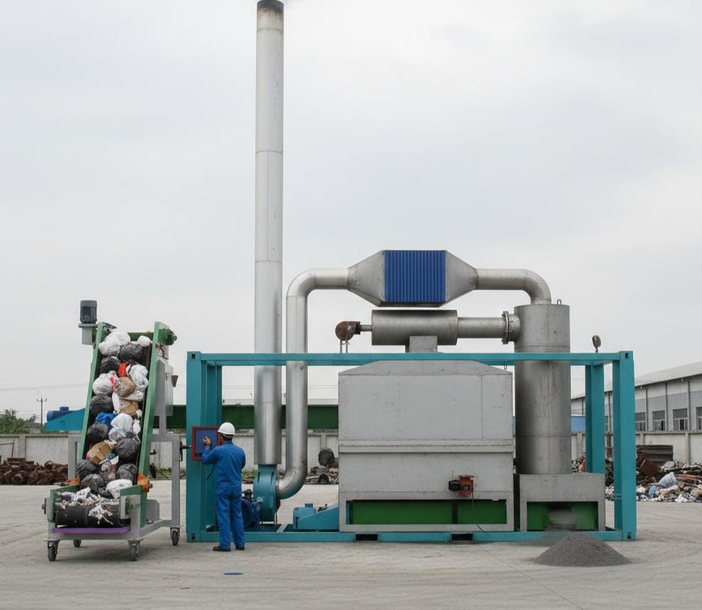

Primary & Secondary Chamber
Kombinasi ruang bakar utama dan sekunder membantu proses pembakaran lebih merata, menghancurkan kontaminan organik yang sulit terurai, serta mengurangi potensi pembentukan dioxin dan furan.
OSAMU Incinerator adalah sistem pemusnah sampah domestik 1 ton per jam dengan ruang bakar primer dan sekunder, sistem penanganan gas buang (wet scrubber, electrostatic smoke), serta pemantauan emisi berkelanjutan untuk membantu pengelola kawasan memenuhi regulasi lingkungan.

OSAMU Incinerator adalah sistem pemusnah sampah domestik kapasitas 1 ton per jam yang dirancang untuk pengelola kawasan permukiman, komersial, industri, fasilitas umum, dan fasilitas sosial dalam mengelola sampah rumah tangga dan sejenisnya sesuai ketentuan UU 18/2008 dan PP 81/2012.
Sistem ini mengintegrasikan proses pengumpanan limbah melalui screw conveyor, ruang bakar primer (primary chamber), ruang bakar sekunder (secondary chamber), hingga penanganan gas buang dan abu sisa pembakaran secara otomasi.
Dengan pendekatan “Zero Waste is a Journey, Not a Destination”, OSAMU membantu organisasi bergerak bertahap menuju pengelolaan sampah yang lebih tertib, terukur, dan dapat diawasi emisinya secara kontinu.
Rangkaian fitur OSAMU dirancang sebagai satu paket terintegrasi dari sistem pengumpan, pembakaran, hingga pengendalian emisi dan penanganan abu.
Kombinasi ruang bakar utama dan sekunder membantu proses pembakaran lebih merata, menghancurkan kontaminan organik yang sulit terurai, serta mengurangi potensi pembentukan dioxin dan furan.
Tahapan wet scrubber dan electrostatic smoke dirancang untuk menghilangkan partikel debu halus serta gas berbahaya dari aliran gas buang sebelum dilepas melalui cerobong.
Sistem screw conveyor untuk input limbah dan pembuangan fly ash membantu operasi yang lebih aman dan kontinu, sementara CEMS memantau parameter emisi secara real-time.
OSAMU Incinerator ditujukan bagi pengelola kawasan permukiman, komersial, industri, kawasan khusus, fasilitas umum, dan fasilitas sosial yang memiliki kewajiban mengelola sampah di wilayahnya.
Mendukung pengelolaan sampah domestik di kawasan perumahan, kompleks hunian, dan area permukiman padat yang membutuhkan solusi pemusnahan di lokasi.
Dapat diaplikasikan pada pusat perbelanjaan, kawasan bisnis, dan fasilitas industri yang menghasilkan sampah sejenis sampah rumah tangga.
Cocok untuk fasilitas pendidikan, rumah sakit non-B3, lembaga pemasyarakatan, dan fasilitas sosial lain yang memerlukan sistem pengelolaan sampah internal yang tertib.
Berbagai institusi, perusahaan, dan pemerintah daerah telah menggunakan OSAMU Incinerator dan solusi rekayasa CME Engineering untuk kebutuhan pengelolaan sampah domestik dan mesin proses lainnya.
Pembuatan mesin incinerator IC dan penambahan burner BNT-18.
Pembuatan mesin incinerator DR-200 untuk pengelolaan limbah.
Pembuatan mesin bata ringan/hebel: mixer horizontal, conveyor transfer, mesin wire cutting, mold, serta instalasi mekanikal dan elektrikal.
Pembuatan mesin chopper EB-1000 untuk kebutuhan pertanian.
Pembuatan mesin incinerator sampah spesifik.
Pembuatan steamer boiler dan mesin filling jamur.
Pembuatan mesin incinerator MP-1000.
Mesin vibrating coal sieving 60 TPH beserta vibrating screen, conveyor, dan instalasi elektrikal serta mekanikal.
Pembuatan incinerator limbah B3, mesin gold ballmill, mesin soldering VCB, mesin dismantling VCB, serta bucket trolley.
Pembuatan gudang/pabrik bata ringan dan batching plant.
Pembuatan mesin filling jamur.
Pembuatan mesin pencacah plastik, mesin pakan ternak, dan mesin pencacah organik.
Pembuatan mesin incinerator untuk pengelolaan sampah.
Pembuatan mesin incinerator untuk fasilitas desa.
Mesin incinerator portable kapasitas 300–400 kg/hari.
Incinerator OSM-11 kapasitas 300–500 kg/hari.
Incinerator OSM-11 kapasitas 300–500 kg/hari.
Incinerator v.12 untuk pengelolaan sampah bank sampah.
Incinerator v.12 untuk fasilitas konstituen.
Incinerator v.12 untuk kebutuhan pengelolaan sampah.
Incinerator v.13 untuk fasilitas kampus.
Incinerator v.13 untuk pengelolaan sampah desa.
Incinerator v.12 untuk fasilitas desa.
Incinerator v.13 untuk fasilitas pemasyarakatan.
Pembuatan mesin incinerator IC dan penambahan burner BNT-18.
Pembuatan mesin incinerator DR-200 untuk pengelolaan limbah.
Pembuatan mesin bata ringan/hebel: mixer horizontal, conveyor transfer, mesin wire cutting, mold, serta instalasi mekanikal dan elektrikal.
Pembuatan mesin chopper EB-1000 untuk kebutuhan pertanian.
Pembuatan mesin incinerator sampah spesifik.
Pembuatan steamer boiler dan mesin filling jamur.
Pembuatan mesin incinerator MP-1000.
Mesin vibrating coal sieving 60 TPH beserta vibrating screen, conveyor, dan instalasi elektrikal serta mekanikal.
Pembuatan incinerator limbah B3, mesin gold ballmill, mesin soldering VCB, mesin dismantling VCB, serta bucket trolley.
Kirimkan ringkasan jenis sampah, kapasitas yang dibutuhkan, serta kondisi lokasi instalasi. Tim CME akan membantu menyusun konfigurasi OSAMU Incinerator Domestik 1 TPH yang paling sesuai dengan kebutuhan dan ketentuan lingkungan yang berlaku.